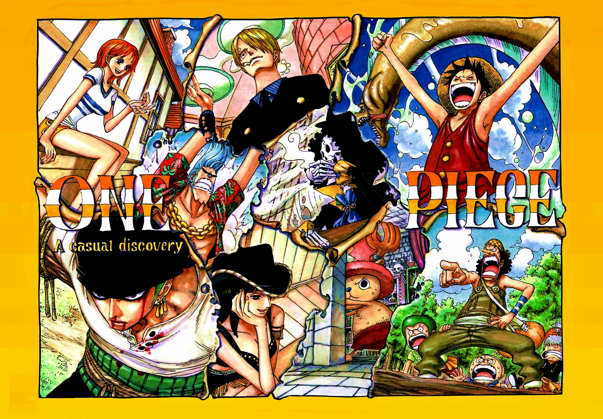
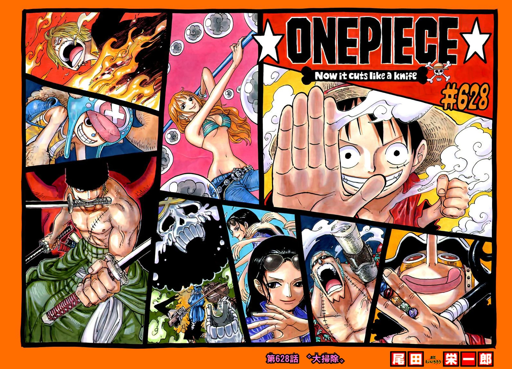

One Piece (ひとつなぎの大秘宝ワンピース Wan Pīsu?) es un manga escrito y dibujado por Eiichiro Oda, que ilustra las aventuras de los protagonistas piratas, en concreto la tripulación pirata formada por Monkey D. Luffy, quienes están en la búsqueda de un tesoro llamado One Piece. Fue publicado por primera vez el 19 de julio de 1997 en la revista Shonen Jump.
Bienvenidos a One piece wiki
Introducción
La obra está dividida en dos partes: El mar de la supervivencia: Saga de los supernovatos (サバイバルの海 超新星編 Sabaibaru no Umi: Chōshinsei-hen?), y El último mar: Saga del Nuevo Mundo (最後の海 新世界編 Saigo no Umi: Shinsekai-hen?).

